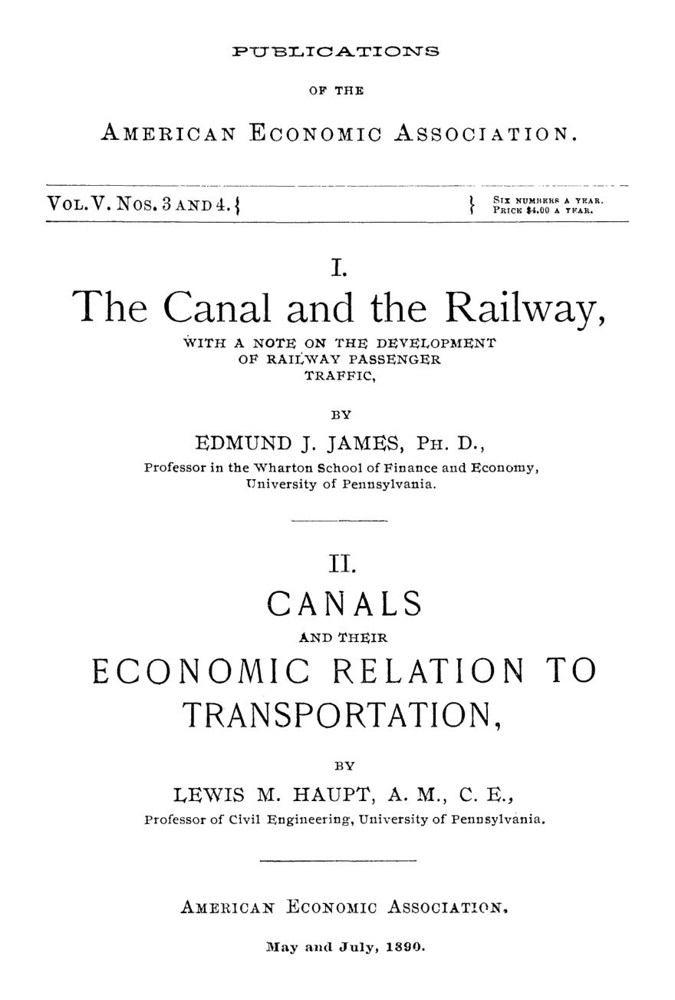

O canal que segurava o preço do trem
Leitura: 8 min
Em 1890, um economista e um engenheiro mostraram que o canal, dado como morto, ainda levava carga pesada mais barato e punha um teto no frete ferroviário.


Em Henry, no Illinois, despachar 100 libras de carga até Chicago, a cem milhas de distância, custava 8 centavos de dólar. Em Tiskilwa, doze milhas mais a oeste, o mesmo serviço custava 15. A ferrovia era a mesma, a Chicago, Rock Island and Pacific. A diferença: Henry ficava ao alcance do canal Illinois and Hennepin, pouco mais que uma vala. Tiskilwa, não.
O exemplo está num fascículo duplo das Publications of the American Economic Association, de maio e julho de 1890, que reúne dois professores da Universidade da Pensilvânia: o economista Edmund J. James, da Wharton School, e o engenheiro civil Lewis M. Haupt. A tese comum incomodava o otimismo da época. Meio século depois da vitória da locomotiva, o canal continuava a fazer duas coisas que o trilho não fazia: levar carga pesada mais barato e impor um limite ao preço do frete ferroviário.
James registra o tamanho do descrédito. Vinte e cinco anos antes, escreve, quem apostava no canal passava por ignorante ou visionário. A virada teria vindo com o sucesso do canal de Suez. A partir de cerca de 1870, parlamentos, governos e associações técnicas voltaram ao tema, e um Congresso Internacional de Navegação Interior passou a se reunir, de Bruxelas a Paris.
Os dois textos se completam. James pergunta por que o canal decaiu e por que renasce, com estatísticas da Inglaterra, França, Prússia e Estados Unidos, e fecha com uma nota sobre a nova tarifa ferroviária de passageiros da Hungria. Haupt parte da física da resistência ao movimento para chegar à contabilidade das empresas, e a uma história pouco edificante de canais comprados por ferrovias para deixar de competir.
Por que o canal perdeu, e por que ainda importava?
James não subestima a ferrovia. O trem era mais rápido, rodava dia e noite e subia morros. O canal de Erie ficava parado pelo gelo mais de 40% do tempo entre 1873 e 1883. Mas a superioridade técnica, diz ele, não explica sozinha a derrota.
Pesaram erros e estratégia. Os donos de canais ingleses agarraram-se a pedágios altos. As ferrovias compraram canais para controlá-los: em 1880, das 4.033 milhas de canais e rios canalizados da Inglaterra, Escócia e País de Gales, 1.447 estavam sob controle ferroviário. Bastava possuir um elo da cadeia para dominar a rota inteira.
O sistema, além disso, nunca foi sistema. Na rota das minas de Derbyshire a Londres, um único elo com eclusas estreitas limitava os barcos a 24 toneladas; o resto comportava até 80.
Ainda hoje é o canal de 1825 tentando competir com a ferrovia de 1890. (It is even to-day the canal of 1825 trying to compete with the railway of 1890.)
A redescoberta veio pelos custos, sobretudo para carga pesada e volumosa que não estraga no caminho. Nos Grandes Lagos, a ferrovia mais favorecida custava quatro vezes o vapor por tonelada-milha.
A Europa já agia. Em 1879, a França fixou medidas uniformes para as eclusas principais, aptas a barcaças de 250 a 300 toneladas, e votou recursos para as obras. Na Prússia, o governo propôs em 1882 um canal das minas da Vestfália ao mar; a Câmara alta o rejeitou por cinco votos, mas pediu um plano de rede uniforme.
O argumento mais forte é o da disciplina de preços. Albert Fink, gestor ferroviário, escreveu ao senador Windom em 1878 que as tarifas entre Chicago e Nova York caíam sempre que o Erie abria, e a queda chegava a cidades sem concorrência fluvial, até o Sul. Havia quem dissesse que o canal valeria a manutenção mesmo sem levar uma tonelada.
A proposta de James é uma rede ligando o Mississippi, os Grandes Lagos e o oceano. Quem a constrói? O capital privado, se servir ao público; se não, os estados; se não, a nação. E mesmo que os pedágios não pagassem a obra, nenhuma estrada sobreviveria se cada trecho tivesse de se pagar sozinho.
A nota final tira a consequência para a própria ferrovia: livre do frete pesado e lento, ela poderia se dedicar a passageiros. James cita a Hungria, que em agosto de 1889 trocou a tarifa por distância por uma tarifa por zonas, com bilhetes vendidos como selos. Nos cinco primeiros meses, os passageiros cresceram mais de 133%, sem alta das despesas operacionais.
Por que uma ferrovia compraria um canal para fechá-lo?
Haupt abre com uma tese de engenheiro: a engenharia é, antes de tudo, economia, a arte de obter o melhor resultado ao menor custo de construção e manutenção. Na água, o atrito é menor e a via é contínua. Daí sua tabela, tomando como base o Erie ampliado e sem pedágio: menos de 3 milésimos de dólar por tonelada-milha no canal, 1,2 nos lagos, 0,5 no oceano.
O custo do movimento na água é inversamente proporcional ao calado da embarcação. (The cost of movement on water is inversely proportional to the draught of the vessel.)
A implicação é direta: muitos canais antigos fracassaram por falta de profundidade, não por vocação. O primeiro Erie, de quatro pés de calado, operava a 4,14 milésimos por tonelada-milha; ampliado para sete pés, caiu a 2,16.
O problema, para Haupt, é de estrutura de mercado. Comprovado que o canal era mais barato, as ferrovias decidiram eliminá-lo ou controlá-lo. No Schuylkill, depois da ampliação de 1846, a tonelada de carvão de Pottsville a Filadélfia pagava 90 centavos entre pedágio e frete. Sob a Philadelphia and Reading, dona do canal, passou a pagar o mesmo que por trilho: 170 centavos.
O canal Delaware and Raritan, em Nova Jersey, conta a mesma história em balanço. Em 1866, rendeu lucro líquido de quase 23% sobre o capital, contra pouco mais de 5% da ferrovia associada. Arrendado à Pennsylvania Railroad em 1871 por 999 anos, perdeu o carvão da Reading e viu o resultado minguar até 1887. Conclusão oficial: o canal não paga. E deixa-se que decaia.
Haupt recorre ao mesmo Albert Fink, então comissário das grandes linhas tronco, falando a um comitê do Congresso:
os transportadores das rotas aquáticas é que de fato fixam essas tarifas (the carriers by the water routes really establish these tariffs)
O contraste aparece nos Grandes Lagos. O canal de Sault Ste. Marie, fechado quase metade do ano pelo clima, já superava Suez em tonelagem. Enquanto isso, o tráfego do Erie estacionara em torno de 5 milhões de toneladas por quinze anos; o crescimento ia para as ferrovias, cujas tarifas o canal continuava a conter.
As propostas seguem. O governo federal deveria completar a rota do Mississippi ao Atlântico e uma via interna pela costa até a Flórida, útil também à defesa. O Delaware and Raritan deveria ser ampliado e retificado, ou vendido aos Estados Unidos e aberto livre como um rio. Haupt sustenta um paradoxo: a via navegável livre costuma enriquecer as ferrovias de suas margens, porque adensa a população, e população é a vida do comércio.
Na minha leitura
Na minha leitura, o que envelheceu nos dois textos é a técnica; o que não envelheceu é o argumento sobre concorrência. James e Haupt perceberam que o valor de uma infraestrutura alternativa não se mede só pelo que ela transporta, mas pelo preço que impede o rival de cobrar. Um canal que segura a tarifa do trilho é um ativo que nenhum balanço privado registra. Por isso tende a ser vendido, fechado ou abandonado por quem olha apenas o próprio resultado.
O segundo ponto é mais sutil. Nenhum dos dois culpa o gestor ferroviário; James diz que ele vive do curto prazo e cuida da própria linha. A falha apontada é de quem deveria zelar pelo interesse geral e deixou o concorrente ser comprado. A pergunta vale para qualquer setor de rede: quem garante que a alternativa mais barata continue de pé quando ela incomoda quem já domina o mercado?
Glossário
- Tonelada-milha
- Uma tonelada transportada por uma milha; unidade padrão para comparar custos de frete entre modais.
- Calado
- Profundidade que a embarcação carregada ocupa abaixo da linha d'água; limita o tamanho dos barcos que uma via aceita.
- Eclusa
- Câmara com comportas que eleva ou abaixa barcos entre trechos de nível diferente; suas medidas definem a carga máxima da rota.
- Milésimo de dólar (mill)
- Um décimo de centavo; unidade usada por Haupt para custos por tonelada-milha.
- Tarifa por zonas
- Preço da passagem fixado pelo número de faixas de distância atravessadas, e não pela quilometragem exata.
Artigos desta edição
- The Canal and the Railway, with a Note on the Development of Railway Passenger Traffic — Edmund J. James (pp. 9–57). James examina por que o canal perdeu terreno para a ferrovia ao longo do século XIX: velocidade, gelo, falta de padronização das eclusas, obstinação dos donos de canais e compra sistemática de vias navegáveis por companhias ferroviárias. Em seguida, documenta o renascimento do interesse desde cerca de 1870 na Inglaterra, França, Prússia e Estados Unidos, com dados de custo por tonelada-milha e o papel do canal de Erie como regulador de tarifas. Propõe uma rede ligando Mississippi, Grandes Lagos e oceano, e encerra com uma nota sobre a tarifa ferroviária por zonas adotada na Hungria em 1889. JSTOR
- Canals and Their Economic Relation to Transportation — Lewis M. Haupt (pp. 61–85). Haupt, engenheiro civil, trata a engenharia como problema econômico e formula uma regra: o custo do transporte aquático cai na proporção inversa do calado da embarcação. Com casos da Pensilvânia e de Nova Jersey, como os canais Schuylkill e Delaware and Raritan, mostra como ferrovias que adquiriram canais elevaram fretes ou deixaram as vias decair. Compara o canal de Sault Ste. Marie a Suez e defende a ampliação de elos da navegação interior pelo governo federal, inclusive como medida de defesa. JSTOR
Fontes
- The Canal and the Railway, with a Note on the Development of Railway Passenger Traffic (pp. 9–57). JSTOR · Internet Archive (PDF)
- Canals and Their Economic Relation to Transportation (pp. 61–85). JSTOR · Internet Archive (PDF)
- Sumário da edição no JSTOR: Publications of the American Economic Association, vol. 5, nº 3/4.
Documento em domínio público (EUA, publicado antes de 1931), via JSTOR Early Journal Content e Internet Archive. Resumo e comentário do autor deste site, sem afiliação com a American Economic Association. Encontrou um erro? Escreva: a correção é publicada no próprio texto, com data.
← Nº 24 · Crianças na linha de produção: dois diagnósticos de 1890 Nº 26 · O imposto que contava bois e não enxergava ações →